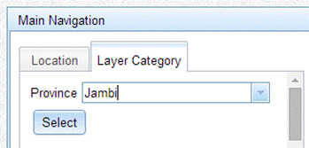
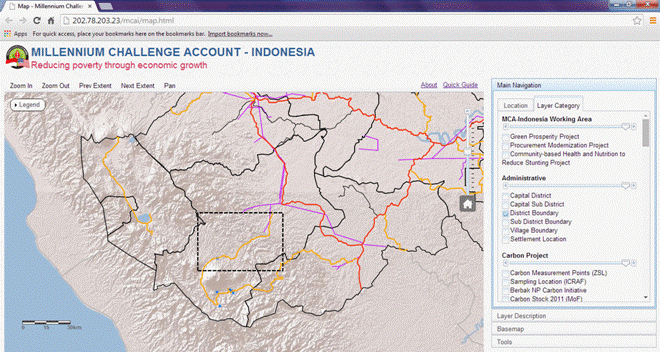

|
Quick
Guide for MCA-Indonesia
SummaryThis quick guide will walk you through MCA-I dashboard mapping application. It is meant for non GIS specialist looking to get started using the application. Dashboard Mapping ComponentsThere are two main components in the application, namely Navigation Window and Map Window (Fig. 1). Navigation window contains Main Navigation, Layer Description, Basemap and Tools. Main Navigation includes Layer Category and Location tabs. Layer Category contains a list of layers that are available in the application. Location tabs is used to navigate map window according to province, district, and landscape. Map window is used to display layers, which are active/checked in Layer Category tab.
Layer Description is located below the Main Navigation. It provides layer information such as short description of a layer and data source. Basemap is used to change the background of Map Window. Current default is using Ocean. Tools contain several facilities/tools such as tool to measure distance, export Map Window (inprogress), and Searching an attribute. Exercise 1. Understanding datasetCurrently, the dashboard mapping application has two datasets, i.e. Jambi and West Sulawesi Province. Jambi dataset mostly obtained from Satgas REDD+ which has cooperation with UNDP - REDD+ Programme. The data was collected under a project called Provision of Baseline Data and Cadastral Maps. West Sulawesi dataset is obtained from previous MCC projects, i.e. District Readiness Assessment (Abt Consultant) and Feasibility Study (NREL). This exercise will explain how to set the data to a specific province before displaying the data.

Map Window will only display the capital of the district in Jambi Province.
Now, Map Window will only display the capital of the district in West Sulawesi Province. Setting up the dataset is needed before user display specific province data set. This setting up is provided because the data set between the two provinces have been different. There is a problem on data availability in Indonesia, where specific spatial data may available in a province but may not available in other provinces. To understand the different layer available between Jambi and West Province do the following steps:
The Carbon Project category only available in Jambi dataset, therefore, user cannot find the same information for West Sulawesi province. Exercise 2. Displaying working area of MCA-IndonesiaIn this exercise, users will be guided to display the working are of MCA-Indonesia project. There are three projects managed by MCA-Indonesia, i.e. Green Prosperity Project (GP), Procurement Modernization Project (PMP), and Community-based Health and Nutrition to Reduce Stunting Project (CHNRSP).
Map Window shows the starter district of GP project, which indicated by green color, while the working area of PMP and CHNRSP in district level represented by different types of hatching (see Fig. 2). The Legend will display only the active layer. If you display many layers, you have to scroll down the legend menu to find the corresponding legend.
We are going to continue our exercise by zoom in to Jambi province
Map Window displays MCA-I project with geographic extend directing to Jambi Province. It also shows the projects located in the neighboring district of Jambi Province. District with two (or more) symbols indicate that the district has two (or more) projects, respectively. For example, Muaro Jambi has two MCA-I projects, i.e. GP and PMP, which are indicated by green color (GP) and vertical hatch (PMP). Banyuasin (south Sumatera) has also two projects, i.e. PMP and CHNRSP, which are indicated by vertical and horizontal hatch, respectively. Fig. 3. Location tab is used to zoom in into specific area (province, district, and landscape). The figure shows that MCA-I has two projects in Muaro Jambi (i.e. GP and PMP) and Banyuasin (i.e. PMP and CHNRSP). When you are not sure where the boundary of Jambi Province is, you can display it using the following step:
GIS has special function. Not only it helps you to know where the location is, it also allows you to know what information in a specific location. This information is called an attribute.
Very often people asking where the (spatial) data come from. We provide Layer Description, which is located below the Main Navigation to provide you information (short description and data source) on the layer that is active/being displayed.
If you are still displaying District Boundary, Layer Description tells you that this data obtained from Biro Pusat Statistik (BPS)
Exercise 3. Assessing forest encroachment in MeranginIn this exercise, user will be guided to see a sign of forest encroachment using this application. We will use forest status and landcover layers. Both spatial data were obtained from Ministry of Forestry.
Forest status is classified into 5 classes. Originally, for Jambi province it has 9 classes. Cagar Alam (CA), Taman Nasional (TN), Taman Hutan Rakyat (Tahura), and Taman Wisata Alam (TWA) are grouped as Conservation Area to simplify the symbol. As you may have guess, this layer is obtained from Ministry of Forestry (MoF).
You may find that in some area, the district boundary cannot be seen because it covered by forest status polygon. To solve this problem, we provide transparency level that can be used to display layers, which are overlaid.
We are going to focus on Merangin district to assess the forest status with the existing landcover
After displaying the landcover, you cannot see forest status layer in Merangin because it is blocked by landcover layer.
Using the transparency bar you are able to check that Conservation Area is not forested area in fact it has been used as agriculture. In other words you may see sign of encroachment to conservation area in a specific area (see Fig. 6.)
You can zoom in to that particular area in order to have a better view using Zoom In tool.
Our Zoom In result is shown in Fig. 6b.
Exercise 4. Measuring distance between objectsThis exercise will walk through the use of a tool to measure the distance between renewable energy sources, i.e. Microhydro, to the closest transmission line (on grid). This distance can be important if the owner of Microhydro station would like to sell electricity, which they produce, to the state (PLN). This exercise assumes that you have already practiced using exercise 1 and 2.
Your Map Window should be the same with Fig. 7a. We are going to focus on the specific area where the Microhydro station and its closest transmission lines are located. This area of interest is shown as dashed rectangle in Fig. 7a. 
Your Map indo should be the same with Fig. 7b. We would like to measure distance between the closest transmission lines to the Microhydro station. This distance can be important if the owner of Microhydro station would like to sell electricity, which they produce, to the state (PLN).
Your display should be the same as Fig 8. Several green flags show the path that you measured. The measured distance is about 37 km. This distance is not feasible for PLN to extend their transmission lines to the Microhydro station.
· When you have finished, click on Distance button to remove the measured path · Uncheck all layers to finish this exercise Exercise 5. Finding village locationOne of the tools that we provide in this dashboard mapping is Searching tool. This tool is useful when user would like to locate Map Window to a village location but he/she only knows about the name of the village. For example, user only knows that one of the GP project is located in Rantau Suli but he/she does not know where the village is. Location tab cannot help as it only locates to province, district, and landscape level. This exercise will show how to use Searching tool to locate Map Window to a village. This exercise assumes that user has completed exercise 1-3, therefore he/she is already able to display specific layer as instructed below.
Your display should be the same with Fig. 9.
The record which matches with the search criteria will be shown in the box below the search button. While the polygon which matches with the search criteria will be highlighted with cyan color in Map Window.
This is the end of this quick guide. We continue to update the tools and quick guide of this application. Always check out our application to find the recent updates.
|